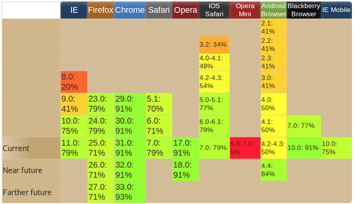
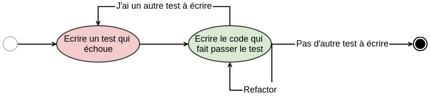
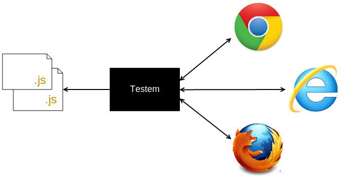
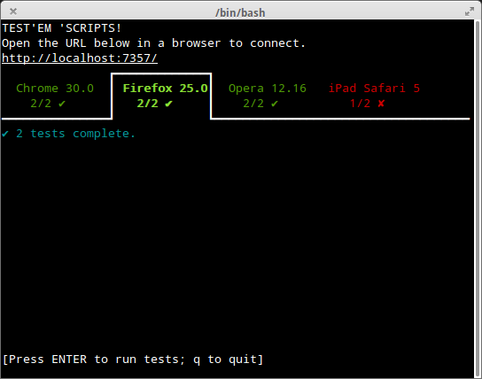
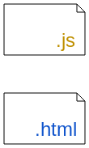
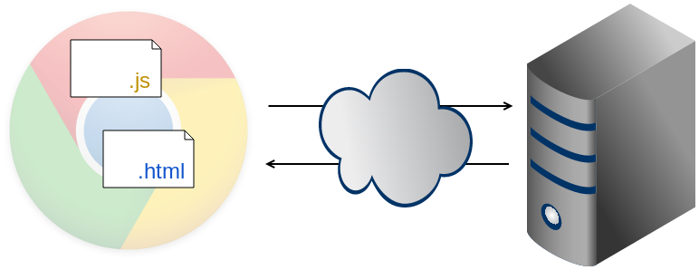

Tester son code JS dans tous les navigateurs ...
automatiquement !
Christophe PROMÉ et Nicolas MEDDA
Pourquoi Tester ?

Pourquoi Tester ?
Coût d'un bug
Pourquoi Tester ?

Pourquoi Tester ?

source : www.caniuse.com
Live coding
Le projet : une TODO list en TDD

Test Driven Development

Test unitaire
| pour encapsuler les tests | |
| pour les assertions |
Test d'intégration / UI
- On agit sur le DOM
- Assertion sur l'état du DOM
- Testem / Karma
End 2 End
- Dalek / Casper ...
Intégration...
maintenant qu'il y a un serveur
- Mock et ses copains
Step #1
christophe@antares:$ curl http://localhost:5000
<!doctype html>
<html>
<head>
<meta charset="utf-8">
<title>Le Projet !</title>
</head>
<body>
</body>
</html>
Step #2
function Model() {
this.elements = [];
}
Model.prototype.addElement = function(element) {
this.elements.push(element);
};
Test'em
Test'em 'Scripts! A test runner that makes Javascript unit testing fun.

Test'em

Step #3

Step #4

Step #5
Mock, Stub, Spies et FakeXHRStub !
function Store() {}
Store.prototype.findAll = function() {
console.log('je suis la vrai methode findAll');
}
store.findAll();
// => je suis la vrai methode findAll
sinon.stub(store, 'findAll').yields('Je suis le stub de store.findAll');
store.findAll(); // => Je suis le stub de store.findAll
// Équivalent à
store.findAll = function() {
return 'Je suis le stub de store.findAll';
};Mock !
var store = new Store();
var model = new Model(store);
var mock = sinon.mock(store);
mock.expects('findAll').once();
model.all();
mock.verify();
// On s'assure que la méthode all de model à bien appelé
// la methode findAll de store;
FakeXHR !
var server = sinon.fakeServer.create();
server.autoRespond = true;
server.respondWith('GET', '/elements', [200, {
'Content-Type': 'application/json'
}, '["elem1", "elem2", "elem3"]']);
Store.findAll = function() {
xhr.get('/elements' ...);
}
var store = new Store();
store.findAll();
// => L'appel xhr dans la methode recevra les données définie
// dans server.respondWith
Merci !
Et testez bien !